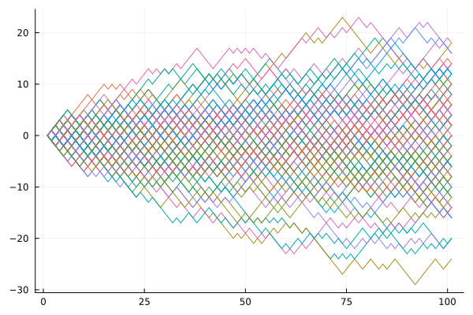
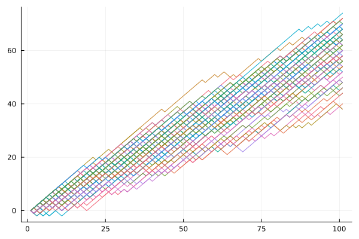
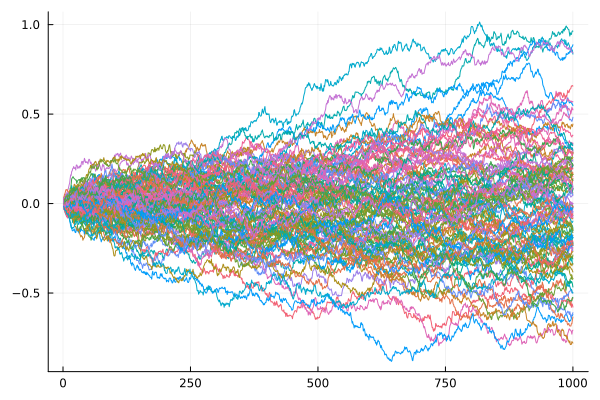
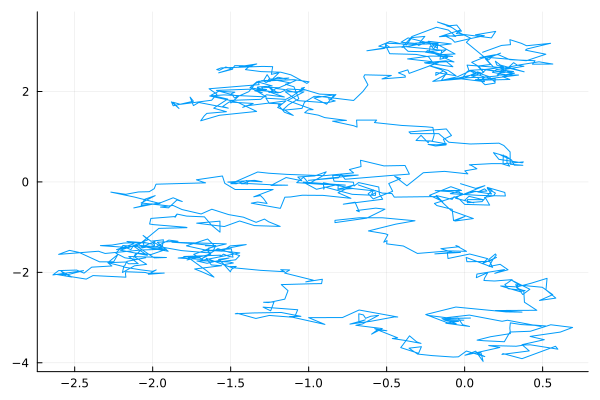
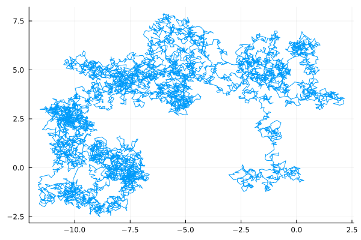
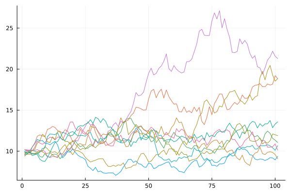

Цель работы
Исследовать модели случайного блуждания.
Задачи
Примеры применения математических моделей случайного блуждания:
Julia
Random.jlStatsBase.jlDistributions.jlPlots.jl$$ S_n = \sum\limits_{i=1}^n \xi _i , $$
где S0 = 0, {ξn, n > = 1} – случайные величины, P(ξn=1) = p и P(ξn=−1) = 1 − p = q
begin
p_left = 0.5 # вероятность шага вниз
p_right = 1 - p_left # вероятность шага вверх
num_steps = 100 # количество шагов
start_point = 0 # отправная точка
end_point = 100 # ограничения
count_steps = 1000
plt = plot(legend = false)
steps = [0]
for i in 1:count_steps
push!(step, step[i] + StatsBase.sample([-1, 1],
ProbabilityWeights([p_left, p_right])))
end
end

$$ dW = \epsilon \sqrt{dt}, $$
где ϵ — случайная величина со стандартным нормальным распределением ϵ ∼ N(0,1); t — дискретное время.
Случайный процесс Wt, где t ≥ 0 называется винеровским процессом, если
h = 0.1
T = 100
function wiener(h, T)
return cumsum([rand(Normal(0,h)) for i in 0:h:T])
end
движение броуновской частицы вызывается крайне частыми ударами со стороны непрестанно движущихся молекул окружающей жидкости;
движение этих молекул столь нерегулярно, что их воздействие на взвешенные частицы можно описать только вероятностным образом в предположении очень частых, статистически независимых ударов.


dXt = μXtdt + σXtdWt,
где Wt - винеровский процесс, а μ – параметр сноса, σ параметр волатильности.
Решение:
Xt = X0e(a−fracx22)t + sWt
h = 0.1
T = 100
s = 0.4
a = 0.1
x_0 = 10
function GBM(h, T, a, s)
return x_0.*exp.((a - s^2/2). [0:h:T;] .+ s.*wiener(h,T))
end
Дано описание и выполнена программная реализация простейшей модели случайного блуждания, винеровского процесса и геометрического броуновского движения.